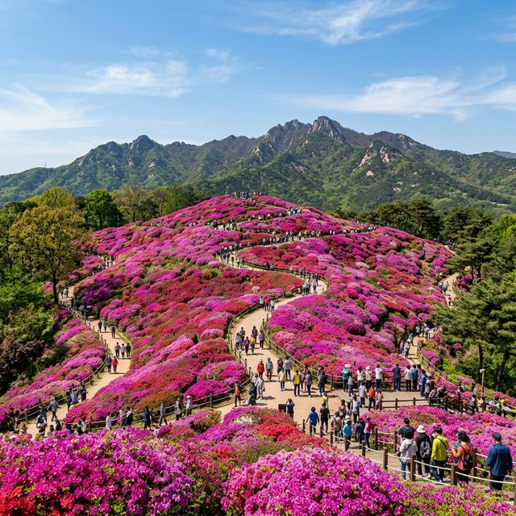
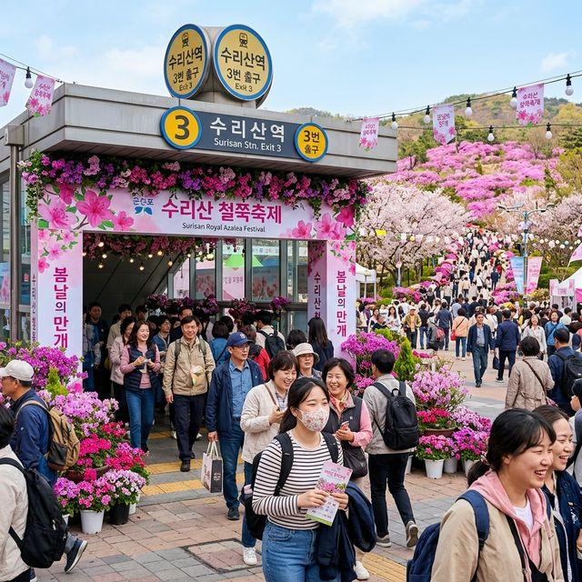
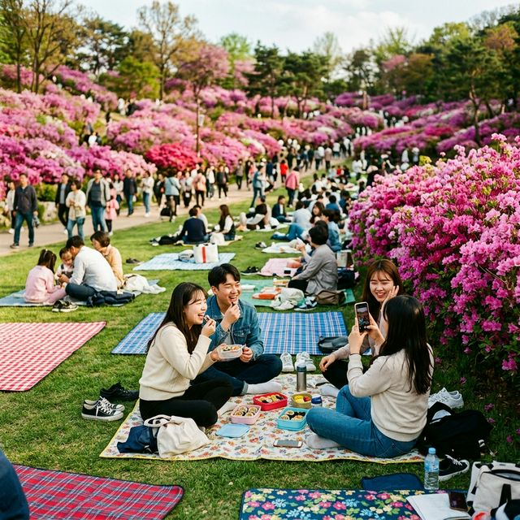

군포 철쭉축제 2026 실시간 개화 상황 — 100만 그루 진홍빛 물결, 지하철 4호선 수리산역 인파 대처법
경기도 군포시의 봄을 상징하는 2026 군포 철쭉축제가 오는 4월 18일부터 26일까지 9일간의 화려한 여정을 시작합니다. 수리산 자락을 붉게 물들인 100만 그루의
철쭉이 빚어내는 장관은 수도권에서 맛볼 수 있는 최고의 봄 사치 중 하나입니다. 이번 리포트에서는 4월 20일경으로 예상되는 절정 시기와 더불어, 극심한 혼잡 속에서도 쾌적하게 축제를 즐길 수 있는
지하철 이용 꿀팁과 피크닉 명당 정보를 완벽하게 정리해 드립니다.

진홍빛 철쭉이 파도처럼 넘실거리는 군포 철쭉동산의 장엄한 풍경 | AI 제작 이미지
1. 철쭉동산: 100만 그루가 빚어낸 핑크색 파도
군포 철쭉동산은 인위적으로 조성된 공원이지만, 수십 년의 세월이 흐르며 이제는 자연보다 더 자연스러운 절경을 뽐내는 대한민국 최고의 철쭉 성지입니다. 약 2만 평의 대지에
빽빽하게 들어찬 자산홍과 산철쭉은 만개 시기가 되면 마치 산 전체에 핑크색 물감을 쏟아부은 듯한 착각을 불러일으킵니다. 산책로를 따라 걷다 보면 어깨 높이까지 올라온 꽃가지들이 방문객을 포근하게 감싸 안으며,
달콤한 꽃향기가 코끝을 간지럽히는 특별한 경험을 하게 됩니다.
꽃들 사이로 난 구불구불한 오솔길을 따라 한 걸음씩 옮길 때마다 눈앞에 펼쳐지는 풍경이 달라집니다. 어떤 곳에서는 진한 자줏빛이, 또 다른 곳에서는 연한 분홍빛이 강조되며 시각적인 리듬감을 선사합니다. 발밑에
닿는 폭신한 흙의 감촉과 머리 위를 지나는 청명한 봄바람은 도심 속 스트레스를 한 번에 날려버리기에 충분합니다. 이곳은 단순히 꽃을 보는 장소가 아니라, 봄의 생명력을 온몸으로 호흡하는 치유의
공간입니다.
군포시는 올해 축제를 위해 노후화된 산책로를 정비하고 야간 조명 시설을 대폭 확충했습니다. 전문가들은 이번 축제가 2026년 수도권 봄꽃 축제 중 경제 파급 효과가 가장 클 것으로 내다보고 있습니다. 실제
지난해 데이터에 따르면 축제 기간 동안 약 90만 명의 인파가 다녀갔으며, 올해는 더욱 다채로운 문화 프로그램이 더해져 100만 명 시대를 열 것으로 기대됩니다.
2. 2026 실시간 개화 리포트: 절정은 언제인가?
축제 방문의 성패는 개화 타이밍에 달려 있습니다. 2026년 군포 지역의 기온 변화를 분석한 결과, 철쭉은 4월 초순부터 봉오리를 맺기 시작하여 축제 개막일인 18일에는 약
60% 정도의 개화율을 보일 것으로 예상됩니다. 가장 완벽한 장관을 볼 수 있는 '만개 절정' 시기는 4월 20일에서 23일 사이가 될 것으로 보입니다. 이 시기에는 꽃잎이 가장
생생하고 색감이 진하여 인물 사진을 찍기에 최적의 조건이 형성됩니다.
개화가 절정에 이르면 동산 전체가 빈틈없이 꽃으로 덮여 마치 붉은 융단을 깔아놓은 듯한 모습을 띠게 됩니다. 하지만 꽃은 온도와 강수량에 민감하므로, 방문 전 군포시청 홈페이지의 실시간 개화 상황판을 확인하는
것이 필수입니다. 만약 만개 시기가 지나더라도 군포 철쭉은 잎과 꽃이 조화를 이루어 또 다른 연두색의 싱그러움을 선사하므로 실망할 필요는 없습니다. 늦봄의 철쭉은 그 나름의 우아한 매력을 지니고 있기
때문입니다.
최근의 이상 기후 현상으로 개화 시기가 예측보다 빨라질 수 있다는 점도 염두에 두어야 합니다. 해마다 기온이 상승하면서 수도권의 철쭉 개화 지도가 조금씩 북상하고 있는 추세입니다. 축제 위원회에서는 꽃의
상태를 최상으로 유지하기 위해 관수 시설을 상시 가동하고 있으며, 방문객들이 꽃을 훼손하지 않도록 가이드 라인을 설치하여 관리하고 있습니다. 이러한 노력 덕분에 우리는 매년 변함없는 진홍빛 물결을 마주할 수
있습니다.
3. 교통 전략: 수리산역 3번 출구와 '차 없는 거리'
군포 철쭉축제 방문 시 가장 주의해야 할 점은 주차 지옥입니다. 축제장 주변 도로는 왕복 4차선으로 협소한 데다, 축제 기간에는 '차 없는 거리' 운영으로 통행이 극히
제한됩니다. 자가용을 가지고 오면 주차장을 찾는 데만 1시간 이상 소비할 확률이 높습니다. 따라서 명쾌한 정답은 바로 지하철입니다. 4호선 수리산역 3번 출구로 나오면 불과 3분
거리에 축제장 입구가 나타납니다.
수리산역 3번 출구로 나오자마자 펼쳐지는 붉은 꽃의 향연은 축제의 시작을 알리는 경이로운 예고편입니다. 역사 내부에는 축제 안내소와 물품 보관소가 설치되어 있어 짐을 맡기고 가벼운 몸으로 꽃구경을 시작할 수
있습니다. 인파가 몰리는 주말 오후 2시~4시 사이에는 역 안이 매우 혼잡하므로, 가급적 오전 10시 이전이나 오후 5시 이후에 방문하는 것이 체력을 아끼는 노하우입니다.
버스를 이용할 경우 '군포소방서'나 '철쭉공원' 정류장에 하차하면 편리합니다. 군포시는 축제 기간 동안 거점역인 금정역과 산본역에서 축제장을 잇는 셔틀버스를 증편 운행할 계획입니다. 특히 수리산역을 이용하는
승객들에게는 인근 상가에서 사용할 수 있는 할인 쿠폰을 증정하는 캠페인도 진행 중이어서 경제적이기까지 합니다. "차는 두고 마음은 편하게"라는 슬로건처럼 대중교통 이용은 이번 여행의 질을 결정짓는 핵심
포인트입니다.

축제의 현관문 역할을 하는 지하철 4호선 수리산역의 활기찬 모습 | AI 제작 이미지
4. 철쭉푸드 & 푸드트럭: 금강산도 식후경!
행사장 중간 정도에 위치한 '철쭉공원'과 차 없는 거리 인근에는 철쭉푸드 존이 마련됩니다. 이곳에서는 지역 맛집들이 참여하는 먹거리 장터와 트렌디한 메뉴 가득한 푸드트럭이
방문객들의 허기를 달래줍니다. 갓 튀겨낸 닭강정부터 시원한 잔치국수, 아이들이 좋아하는 츄러스와 스테이크 컵까지 다양한 선택지가 준비되어 있어 취향껏 즐길 수 있습니다.
특히 군포 지역 상인들이 직접 운영하는 부스에서는 인심 넉넉한 파전과 막걸리를 맛볼 수 있는데, 흐드러진 꽃밭을 바라보며 마시는 차가운 막걸리 한 잔은 그야말로 신선놀음이 따로 없습니다. 음식 냄새가 바람을
타고 꽃향기와 섞여 흐르는 이 구역은 축제의 에너지가 가장 넘치는 곳입니다. 야외에서 먹는 음식 특유의 활기와 사람들의 웃음소리가 어우러져 축제의 즐거움을 배가시킵니다.
2026년 축제는 '제로 웨이스트(Zero Waste)'를 테마로 다회용기 사용을 장려하고 있습니다. 푸드존에서 음식을 구매할 때 개인 용기를 지참하면 소정의 할인 혜택을 주거나, 사용 후 반납하는 시스템을
통해 쓰레기 발생을 최소화하고 있습니다. 깨끗한 꽃길을 유지하려는 군포 시민들의 높은 시민 의식은 축제의 품격을 한 단계 높여주는 요소입니다. 맛있는 음식을 즐긴 뒤 뒷정리까지 깔끔하게 하는 것, 그것이
진정한 꽃놀이의 시작입니다.
5. 피크닉 명당 가이드: 돗자리 명당은 어디인가?
군포 철쭉축제의 백미는 꽃밭 사이 잔디밭에서 즐기는 돗자리 피크닉입니다. 가장 인기 있는 명당은 역시 철쭉동산 정상을 따라 조성된 나무 데크 주변과 동산 하단의 넓은 잔디
광장입니다. 이곳에 돗자리를 펴고 앉으면 눈높이에서 철쭉을 감상할 수 있어 사진을 찍기에도 최적입니다. 등을 기대고 앉아 하늘을 올려다보면 분홍색 꽃잎과 파란 하늘이 겹쳐지며 황홀한 시각적 휴식을
선사합니다.
성공적인 피크닉을 위해서는 약간의 전략이 필요합니다. 나무 그늘 아래 명당은 오전 11시 이전에 대부분 선점되므로, 조금 일찍 서둘러 도착하는 것이 좋습니다. 만약 동산이 너무 붐빈다면 인근의
철쭉공원 상부 잔디밭으로 이동해 보세요. 상대적으로 한적하면서도 동산 전경을 한눈에 조망할 수 있어 여유로운 휴식을 즐기기에 부족함이 없습니다. 가벼운 등받이 의자나 캠핑
테이블을 챙겨온다면 더욱 완벽한 피크닉이 될 것입니다.
최근 2026년에는 혼잡한 구역 내 돗자리 설치를 방지하고 쾌적한 통행로를 확보하기 위해 '피크닉 프리존' 제도를 운영하고 있습니다. 지정된 구역 외에는 돗자리 설치가 제한될 수 있으니 현장 안내 표지판을
주의 깊게 살펴야 합니다. 또한 쓰레기 배출을 줄이기 위해 도시락을 직접 싸오는 '도시락 챌린지' 이벤트도 진행되어, 정성껏 준비한 음식을 나누며 따뜻한 봄날의 온기를 만끽하는 가족들이 늘어나고 있습니다.

철쭉꽃 배경 아래에서 여유로운 봄날 피크닉을 즐기는 시민들 | AI 제작 이미지
6. 초막골생태공원 연계: 숲과 습지가 주는 평온함
철쭉동산 구경을 마친 뒤 인파에서 잠시 벗어나고 싶다면 걸어서 15분 거리에 있는 초막골생태공원으로 발걸음을 옮겨보세요. 철쭉동산이 화려한 원색의 축제장이라면, 초막골은 차분한
연둣빛 신록과 물소리가 있는 조용한 쉼터입니다. 공원 입구에 설치된 인공폭포 '초막동천'에서 시원하게 쏟아지는 물줄기는 산책의 시작을 상쾌하게 열어줍니다.
이곳은 아이들에게 생태 체험의 보고입니다. 습지원을 따라 난 관찰 데크를 걷다 보면 수생 식물과 개구리, 각종 조류를 관찰할 수 있습니다. 흙을 밟으며 걷는 숲길은 발바닥으로 전해지는 지구의 온기를 온전히
느끼게 해주며, 숲속에서 들려오는 산새들의 지저귐은 귀를 맑게 해줍니다. 화려한 철쭉의 잔상이 눈에 남아있을 때 만나는 초막골의 초록빛은 여행의 균형을 완벽하게 맞추어 줍니다.
초막골생태공원 내부에는 대규모 캠핑 시설도 갖춰져 있어, 축제 기간에 맞춰 캠핑을 계획해 보는 것도 좋습니다. 2026년 현재 이곳은 '탄소중립 생태 교육의 메카'로 지정되어 다양한 환경 프로그램이 운영
중입니다. 철쭉동산의 뜨거운 열기를 뒤로하고 나무 그늘 아래 벤치에 앉아 마시는 시원한 물 한 잔은 이번 강진 여행(오타 수정: 군포 여행)에서 만날 수 있는 가장 달콤한 휴식이 될 것입니다.
7. 철쭉마켓 & 버스킹: 감성을 자극하는 문화의 거리
축제 기간 중 차 없는 거리에는 철쭉마켓이 들어섭니다. 군포의 소상공인들과 수공예 작가들이 참여하는 이 마켓에서는 철쭉을 모티브로 한 액세서리, 향초, 도자기 등 아기자기한
소품들을 만나볼 수 있습니다. 세상에 단 하나뿐인 핸드메이드 제품을 구경하다 보면 시간 가는 줄 모르는 재미를 느낄 수 있습니다. 작가들과 직접 대화하며 작품의 의도를 듣는 즐거움은 기성품 쇼핑과는 비교할 수
없는 깊이감을 줍니다.
마켓 곳곳에서는 무명 가수들과 지역 예술인들의 버스킹 공연이 끊이지 않습니다. 기타 선율에 실려 오는 잔잔한 어쿠스틱 노래와 역동적인 댄스 공연은 축제에 생동감을 불어넣습니다.
꽃향기 가득한 골목에서 우연히 만난 음악은 여행자의 발걸음을 멈추게 하고, 한낮의 여유를 만끽하게 합니다. 마음에 드는 공연 앞에 멈춰 서서 가볍게 박수를 치며 호응하는 것만으로도 축제의 주인공이 된 듯한
기분을 누릴 수 있습니다.
2026년에는 관객들이 직접 참여하는 '오픈 마이크' 코너가 신설되어 일반 방문객들도 숨겨진 끼를 발산할 기회를 제공합니다. 또한 철쭉 일러스트 그리기, 꽃차 시음회 등 체험형 부스들이 보강되어 오감을
만족시키는 복합 문화 공간으로 거듭났습니다. 이러한 문화적 요소들은 철쭉축제가 단순히 꽃을 보는 행사를 넘어, 지역의 예술 역량을 보여주는 종합 예술제로 성장했음을 증명합니다.
8. 밤의 환상곡: 야간 조명과 반전 매력
축제장의 진정한 반전은 해가 진 뒤에 시작됩니다. 동산 곳곳에 설치된 야간 경관 조명이 켜지면 철쭉동산은 낮과는 전혀 다른 몽환적인 숲으로 변신합니다. 조명 빛을 받은 철쭉
꽃잎은 낮의 선명함 대신 신비롭고 은은한 광택을 내뿜으며, 어둠 속에서 떠오르는 분홍빛 물결은 마치 요정들이 사는 숲에 들어온 듯한 신비로운 분위기를 자아냅니다.
특히 올해 새롭게 도입된 '레이저 라이팅 퍼포먼스'는 숲 위로 수만 개의 별빛이 쏟아지는 듯한 효과를 연출하여 연인들의 필수 코스로 각광받고 있습니다. 시원해진 밤공기를 마시며 빛나는 꽃길을 걷는 것은 낮의
열기보다 훨씬 차분하고 로맨틱한 감동을 줍니다. 동산 위에서 내려다보는 군포 시내의 야경과 철쭉의 조화는 이곳에서만 볼 수 있는 유일무이한 장관입니다.
야간 관람객을 위해 운영 시간은 밤 10시까지 연장됩니다. 낮의 인파가 부담스러웠다면 조용한 밤 시간대를 이용해 보세요. 관람객들의 안전을 위해 주요 산책로에는 LED 투광등이 촘촘히 설치되어 있으며, 야간
안전 요원들이 곳곳에 배치되어 있어 안심하고 밤 산책을 즐길 수 있습니다. 2026년 군포 철쭉의 밤은 당신의 카메라 앨범뿐만 아니라 가슴 속 깊은 곳에도 지워지지 않는 화려한 잔상을 남길 것입니다.
9. 방문객 실전 가이드: 실패 없는 꽃놀이를 위하여
마지막으로 군포 철쭉축제를 완벽하게 즐기기 위한 실전 체크리스트를 제안합니다. 첫째, 신발은 반드시 굽이 낮은 운동화를 신으세요. 동산 전체가 경사로와 계단으로 이루어져 있어
구두를 신으면 금세 발의 피로도가 높아집니다. 둘째, 자외선 차단제와 양산은 필수입니다. 동산 내부에는 그늘이 부족하여 한낮의 뙤약볕에 노출되기 쉽습니다.
셋째, 화장실 위치를 미리 파악해 두세요. 수리산역 역사 내 화장실과 철쭉공원 공중화장실은 줄이 매우 길 수 있으므로, 행사장 중간중간 배치된 간이 화장실의 위치를 확인해 두는 것이 좋습니다. 넷째, 유모차는
공원 입구의 유모차 대여소를 이용하거나 가벼운 휴대용을 지참하세요. 동산 일부 구간은 계단이 있어 진입이 제한되지만, 무장애 데크로드가 잘 정비되어 있어 유모차나 휠체어로도 주요 지점을 관람할 수
있습니다.
군포 철쭉축제는 시민들의 적극적인 자원봉사로 이루어지는 축제입니다. 꽃을 꺾거나 쓰레기를 무단 투기하는 행위는 삼가 주시고, 진행 요원들의 안내에 적극 협조해 주세요. 성숙한 관람 문화가 뒷받침될 때 비로소
100만 그루의 철쭉도 내년에 다시 우리에게 환한 미소를 보여줄 것입니다. 2026년의 봄, 군포 철쭉동산에서 인생 최고의 화양연화(花樣年華)를 맞이하시길 바랍니다.
#군포철쭉축제
#철쭉동산실시간
#경기도가볼만한곳
#4월축제추천
#수리산역3번출구
#수도권꽃구경
#초막골생태공원
#철쭉축제물때
#가족소풍장소
#인생샷명소